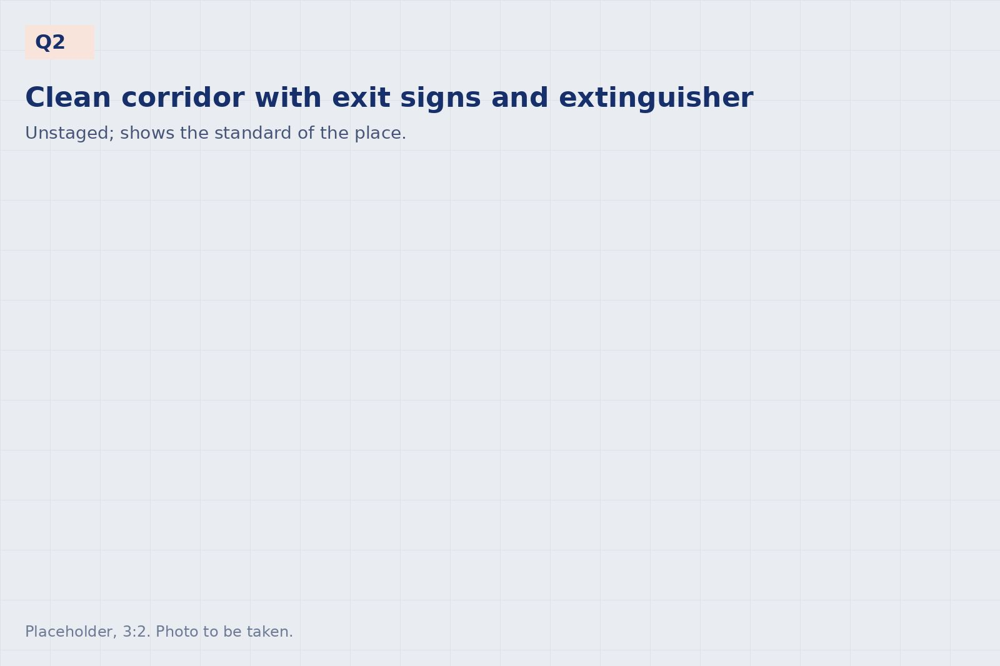

Compliance
Sedex member since 2023. Audited regularly by [two major European fashion groups], including on ethical and social standards.
Audits
The factory is audited under the supplier programmes of [two major European fashion groups], covering working conditions, ethics, health and safety, and environment, and holds Sedex membership since 2023. Certificates, audit reports and detailed information are available on request.
SedexMember since 2023
Brand audit[Group 1], last audit [month year]
Brand audit[Group 2], last audit [month year]
SMETA[4-pillar audit: date / planned]

Documents
Product certifications such as OEKO-TEX, GOTS and OCS follow the fabric; where your fabric is certified, the chain of custody is kept through making-up. The documents below are available to buyers on request.
| Company profile | [One-page PDF: to be produced] |
|---|---|
| Code of conduct | [Document: status] |
| Restricted substances | We work to the buyer's restricted substances list. |
| Subcontracting | All sewing is done in our own building. Embroidery, printing and washing partners are disclosed per order. |
| Company registration | Martı Tekstil Ltd. Şti., [registry, number], Bergama, İzmir |
Certificates and detailed information
Available on request; audit reports are shared with your compliance team under NDA.